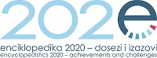

The international conference Encyclopedistics 2020 – Achievements and Challenges, organised on the 70th anniversary of the founding of the Miroslav Krleža Institute of Lexicography, was held on 15 and 16 October in the Institute's great hall, and simultaneously online. Scholars and experts from Austria, Bosnia and Herzegovina, Montenegro, Italy, Hungary, Germany, Poland, the USA, Serbia, Spain, and Croatia exchanged experiences and the results of their research. The conference was opened by the Institute's director general, Bruno Kragić, and the introductory presentation was held by Filip Hameršak, member of the Institute's Board of Directors and assistant editor-in-chief of the Croatian Biographical Lexicon.
The anniversary conference was intended as a reflection on the past achievements, current status, and (un)foreseeable future of encyclopedistics in Croatia, Europe, and the rest of the world. On the first day of the conference, digital topics – digital encyclopedistics and networked knowledge – were in the focus of discussion. Experts in various fields of social sciences and humanities discussed the current state and possibilities of digital encyclopedistics and lexicography, thematic portals, and digital research infrastructures.
During the second day, lexicographers from individual fields presented the results of their research, prompting a discussion on the encyclopedic processing of biographies and various other lexicological and lexicographical topics, concluding that linguistics, cartography, historical sciences, and many other topics from the field of lexicography and encyclopedistics are an important contribution to understanding encyclopedic knowledge.
Despite the epidemiological situation in Croatia and abroad, the organisers brought together Croatian and foreign experts in the field of encyclopedistics, who successfully exchanged experiences and considered new forms of cooperation.
For more information on the conference and presentations, see here: